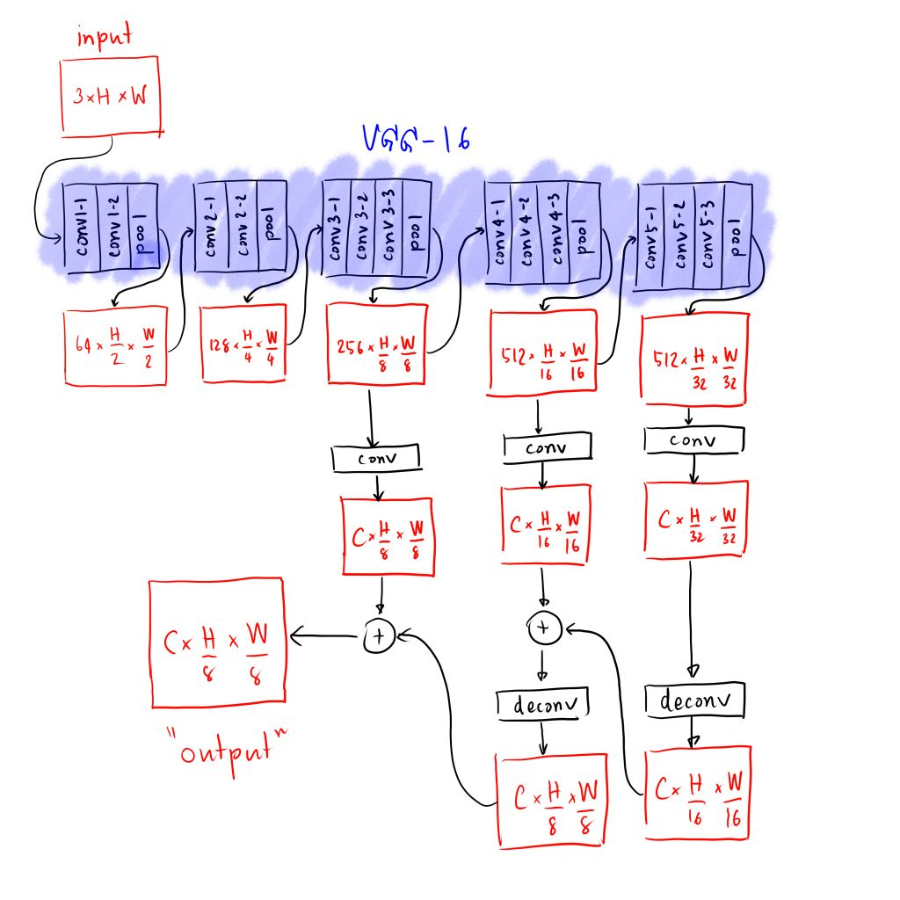

\(
\def\sc#1{\dosc#1\csod}
\def\dosc#1#2\csod{{\rm #1{\small #2}}}
\newcommand{\dee}{\mathrm{d}}
\newcommand{\Dee}{\mathrm{D}}
\newcommand{\In}{\mathrm{in}}
\newcommand{\Out}{\mathrm{out}}
\newcommand{\pdf}{\mathrm{pdf}}
\newcommand{\Cov}{\mathrm{Cov}}
\newcommand{\Var}{\mathrm{Var}}
\newcommand{\ve}[1]{\mathbf{#1}}
\newcommand{\mrm}[1]{\mathrm{#1}}
\newcommand{\etal}{{et~al.}}
\newcommand{\sphere}{\mathbb{S}^2}
\newcommand{\modeint}{\mathcal{M}}
\newcommand{\azimint}{\mathcal{N}}
\newcommand{\ra}{\rightarrow}
\newcommand{\mcal}[1]{\mathcal{#1}}
\newcommand{\X}{\mathcal{X}}
\newcommand{\Y}{\mathcal{Y}}
\newcommand{\Z}{\mathcal{Z}}
\newcommand{\x}{\mathbf{x}}
\newcommand{\y}{\mathbf{y}}
\newcommand{\z}{\mathbf{z}}
\newcommand{\tr}{\mathrm{tr}}
\newcommand{\sgn}{\mathrm{sgn}}
\newcommand{\diag}{\mathrm{diag}}
\newcommand{\Real}{\mathbb{R}}
\newcommand{\sseq}{\subseteq}
\newcommand{\ov}[1]{\overline{#1}}
\DeclareMathOperator*{\argmax}{arg\,max}
\DeclareMathOperator*{\argmin}{arg\,min}
\)
Semantic Segmentation Papers
I have to perform semantic segmentations. I don't know much about the subject, so I need to learn more about it. I read the survey paper by Minaee et al., but I'm still not clear about many of the details. This note is an attempt (1) to put into a web-readable format some valuable information from the paper and also (2) to write out details of the some of the papers cited by the survey.
1 Datasets for Semantic Segmentation
Before going into the datasets, let us mention a convention for calling object categories.
- Things = objects whose individual instances may be easily labeled such as person, chair, or car.
- Stuffs = materials and objects with no clear boudaries such as sky, street, and grass.
Now, we list some famous datasets that are sizable (> 1k images)
- PASCAL Visual Object Classes (VOC)
- [LINK]
- Size
- Training = 1,464 images.
- Validation = 1,449 images.
- 21 classes of "things" + a background class.
- Microsoft Common Objects in Context (MS COCO)
- [LINK]
- Size
- Training set = 82k images.
- Validation set = 40.5k images.
- Test set = 89k images.
- 91 classes of "things" with 80 classes containing semantic segmentation labels.
- Cityscapes
- [LINK]
- Images of urban street scenes in Europe, captured from cars.
- Size
- Images with per-pixel labels = 5k.
- Images with coarse annotations = 20k.
- Pixel annotations have 30 classes of both "things" and "stuffs."
- ADE20K
- [LINK]
- Size
- Training set = 20k images.
- Validation set = 2k images.
- Test set = unspecified.
- 150 classes of "things" and "stuffs."
2 Metrics for Semantic Segmentation
Let us say that there are $K$ object classes and one background class, so there are $K+1$ classes in total.
- Pixel accuracy (PA)
- The number of pixels correctly classified over the number of labelled pixels.
- Let $p_{ij}$ be the number of pixels of class $i$ predicted as belonging to class $j$.
- Definition:
\begin{align*}
\mathrm{PA} = \frac{\sum_{i=0}^K p_{ii}}{\sum_{i=0}^K \sum_{j=0}^k p_{ij}}
\end{align*}
- Mean pixel accuracy (MPA)
- First, compute the pixel accuracy of each class.
\begin{align*}
\mathrm{PA}_i = \frac{p_{ii}}{\sum_{j=0}^K p_{ij}}
\end{align*}
- Then, compute the average the accuracies over the classes.
\begin{align*}
\mathrm{MPA} = \frac{1}{K+1} \sum_{i=0}^K \mathrm{PA}_i = \frac{1}{K+1} \sum_{i=0}^K \frac{p_{ii}}{\sum_{j=0}^K p_{ij}}.
\end{align*}
- Intersection over Union (IoU)
- Fix an object class, the ground truth and the prediction can be viewed as a binary function of the pixels, telling which pixels belong to the class.
- Let $A$ be the set of pixels belonging to the class in the ground truth, and $B$ be the similar set for the prediction.
- The IoU is defined as:
\begin{align*}
\mathrm{IoU} = \frac{|A \cap B|}{|A \cup B|}.
\end{align*}
That is, the number of correctly predicted pixels over the number of pixels that belong to the class in both the ground truth and the prediction.
- Mean-IoU
- The mean of the IoU over all classes.
- This is by far the most popular metrics.
- Precision/Recall/F1 score
- Well-known metrics for binary classification.
- Hence, only defined for a single object class.
- Recall the following concepts:
- true positive (TP)
- false positive (FP)
- true negative (TN)
- false negative (FN)
- Precision and recall are defined as follows:
\begin{align*}
\mathrm{precision} &= \frac{\#\mathrm{TP}}{\#\mathrm{TP} + \#\mathrm{FP}} \\
\mathrm{recall} &= \frac{\#\mathrm{TP}}{\#\mathrm{TP} + \#\mathrm{FN}}
\end{align*}
Here, $\#$ stands for "number of".
- The F1 score is just the harmonic mean of precision and recall.
\begin{align*}
\mathrm{F1}
= \frac{2}{\frac{1}{\mathrm{precision}} + \frac{1}{\mathrm{recall}}}
= \frac{2 \times \mathrm{precision} \times \mathrm{recall}}{\mathrm{precision} + \mathrm{recall}}
\end{align*}
- Dice coefficient
- Defined as follows:
\begin{align*}
\mathrm{dice} = \frac{2 |A \cap B|}{|A| + |B|}
\end{align*}
where $A$ and $B$ are the same as those quantities used in the definitino of the IoU.
- Actually, the dice coefficient is the same as the F1 score. First, note that
\begin{align*}
\#\mathrm{TP} &= |A \cap B| \\
\#\mathrm{FP} &= |B - A| \\
\#\mathrm{FN} &= |A - B|.
\end{align*}
So,
\begin{align*}
\mathrm{precision} &= \frac{|A \cap B|}{|A \cap B| + |B - A|} = \frac{|A \cap B|}{|B|}, \\
\mathrm{recall} &= \frac{|A \cap B|}{|A \cap B| + |A - B|} = \frac{|A \cap B|}{|A|},\\
\mathrm{F1} &= \frac{2}{\frac{1}{\mathrm{precision}} + \frac{1}{\mathrm{recall}}}
= \frac{2}{\frac{|B|}{|A \cap B|} + \frac{|A|}{|A \cap B|}}
= \frac{2|A \cap B|}{|A| + |B|} = \mathrm{dice}.
\end{align*}
3 Approaches for Semantic Segmentation
The survey paper by Minaee et al. classify previous works based on the network architectures they use. There are ten approaches. I'm only listing here approaches that involve only feed-forward networks, skipping recurrent models and those based on region proposals because I don't think I will implement them.
- Fully Convolutional Networks (FCNs)
- This approach adapts architectures used for image classification (AlexNet, GoogLeNet, VGG, etc.) by turning all fully connected layers to convolutional layers.
- Just doing the above produces a feature map that has lower resolution than the input image. Therefore, works using this approach must upsample this feature map in some way to produce pixel-wise outputs.
- Long et al. is the first paper that uses deep learning for semantic segmentation [2015].
- Liu et al. tries to solve the problem that FCNs tend to ignore global context information by just adding one based on pooling features computed from the whole image [2015].
- Convolutional Models with Graphical Models
- Graphical models include conditional random fields (CRFs) and Markov random fields (MRFs).
- The survey papers mention that these graphical models can help with taking into account the global context.
- They also help with cleaning up porous boundaries produced by deep networks. This is often called the "localization" problem.
- Chen et al.'s "DeepLab" system is a famous paper in this direction [2015].
- It uses the famous fully connected CRF by Krahenbuhl and Koltun [2011] as a post-processing step.
- Schwing and Urtasun unify CNNs with CRFs, training them jointly [2015].
- Zheng et al. formulate a CRF as a recurrent neural network to enable join training [2015].
- Liu et al. add additional layers to a CNN to approximate the mean field algorithm for the pairwise terms in an MRF [2015].
- Lin et al. develops a CRF with CNN-based potential functions [2016].
- Encoder-Decoder Models
- Noh et al. is the first paper in this direction [2015]. It uses transposed convolution (i.e. deconvolution) in the decoder.
- SegNet by Badrinarayanan et al. uses pooling indices computed in the max pooling step to do upsamping, leading to a network with a smaller number of parameters [2015].
- HRNet is a new backbone architecture for visual tasks [Sun et al. 2019a], and it can be used to solve semantic segmentation [Sun et al. 2019b]. The approach is extended with "object-contextual representions" and transformer-style attention [Yuan et al 2020].
- U-Net is a tool I'm already familiar with [Ronneberger et al. 2015].
- V-Net is similar to U-Net but is designed for 3D segmentation [Milletari et al. 2016].
- Newer papers:
- Fu et al. Stacked Deconvolutional Network for Semantic Segmentation. [2017]
- Chaurasia and Culurciello. LinkNet: Exploiting Encoder Representations for Efficient Semantic Segmentation [2017]
- Multi-Scale and Pyramid Networks
- Feature Pyramid Network (FPN) performs multi-scale analysis in a CNN [Lin et al. 2016], but it is designed for object detection.
- Zhao et al. applies multi-scale analysis to semantic segmentation [2017].
- Ghiasi and Fowlkes proposes an architecture that refines boundaries from low-resolution features [2016].
- Newer papers.
- He et al. Dynamic Multi-scale Filters for Semantic Segmentation. [2019]
- Ding et al. Context Contrasted Feature and Gated Multi-scale Aggregation for Scene Segmentation. [2018]
- He et al. Adaptive Pyramid Context Network for Semantic Segmentation. [2019]
- Dilated Convolutions
- DeepLab [Chen et al. 2015] and DeepLabv2 [Chen et al. 2016] introduce two additional techniques in addition to the CRF postprocessing.
- The first is the use of dilated (aka atrous) convolutions.
- The second is the "Atrous Spatial Pyramid Pooling" (ASPP), which probes the input feature with filters at multiple sampling rates and effective field of views.
- DeepLabv3 uses an encoder-decoder with atrous separable convolutions [Chen et al. 2018].
- Attention
- Chen et al. (yes, this the Chen of DeepLab) are the first to use attention mechanism in semantic segmentation [Chen et al. 2016].
- Huang et al. uses "reverse attention mechanism," which pays attention to areas that are not supposed to be in the target class, together with the normal attention mechanism. [2017].
- Li et al. combines attention and feature pyramid [2018].
- Fu et al. develops "dual attention," which uses two types of attention modules: one models interdepencies in the spatial dimension, and the other models interdependencies in the channel dimensions [2019].
- Newer papers.
- Yuan et al. OCNet: Object Context Network for Scene Parsing. [2021]
- Li et al. Expectation-Maximization Attention Networks for Semantic Segmentation. [2019]
- Huang et al. CCNet: Criss-Cross Attention for Semantic Segmentation. [2019]
- Ren and Zemel. End-to-End Instance Segmentation with Recurrent Attention. [2017]
- Zhao et al. PSANet: Point-wise Spatial Attention Network for Scene Parsing. [2018].
- Yu et al. Learning a Discriminative Feature Network for Semantic Segmentation. [2018]
- Tao et al. Hierarchical Multi-Scale Attention for Semantic Segmentation. [2020]
- Adversarial Training
- Luc et al. first uses adversarial training to solve semantic segmentation [2016].
- There are a number of works that use adversarial training to do semi-supervised training. However, I'm not that interested in semi-supervised learning because of the kind of data that I have.
- Xue et al. proposes a GAN with multi-scale L1 loss for medical image segmentation [2017].
4 Long et al. (CVPR 2015)
- This seems to be the first paper that uses deep CNNs to perform segmantic segmentation.
- The general approach is to adapt CNNs trained to do image classfication for image segmentation.
- The paper chooses VGG-16 as the CNN to adapt.
- The first step in doing so is to view all fully-connected layers as $1\times 1$ convolutional layers.
- After the first step, the paper says that it removes the last layer that produces a 1000-way prediction, and replaces it with a $1 \times 1$ convolution that produces the right number of classes. (21 for the Pascal VOC dataset.)
- Now, things start to not make sense. The paper claims that this produces an feature tensor whose side length is 32x less than the original image. This, however, does not make sense because the convolution after the last pooling layer has size 7 and does not have any padding.
- The only way for this to work is to add padding at the last convolution or just use the output of the last pooling steps without using the last convolution.
- Assuming that we cut out all the convolutions after the last pooling layer, the paper does the following.
- It passes the output of the last 3 pooling layers to new $1\times1$ convolutional layers to get tensors whose side lengths are 32x, 16x, and 16x smaller than the original image.
- It them combines the outputs together, upsampling the 32x tensor with a deconvolution and add the result to the 16x image. It agains upsamples the result and add it to the 8x image, producing a 8x output.
A diagram of the network is given below.

Here, $C$ is the number of classes, $H$ is the image height, and $W$ is the image width.
- Note, again, that the prediction produced by this paper is 8x smaller (in side length) than the image size.
- We will see that, for most of the works discussed here, the outputs are small in size than the input.
5 The DeepLab Family
- The DeepLab family is the brain child of Liang-Chieh Chen, who started working on it in 2015 and made 3 incrementals to it up to 2018. The last version is called DeepLabv3+.
- Like Long et al.'s paper, the idea is also to repurpose CNNs trained for image classification. It thus must solve the problem that the output resolution is low.
- The DeepLab family
- sets the strides of pooling layers to 1, and
- replaces some convolutions in the original network with atrous convolutions (aka dilated convolution)
to increase output resolution. In constrast, Long et al. uses after-the-fact deconvolution to do so.
Last modified: 2021/09/11